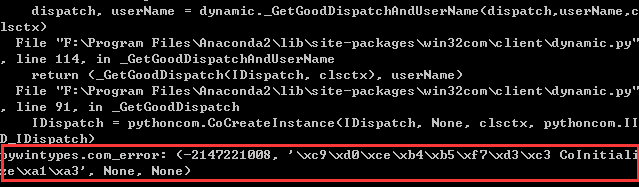

pywin32与多线程：pywintypes.com_error:CoInitialize
问题
被pywin32和多线程之间的关系折磨了一上午，终于大体弄懂了，将一些经验记录一下，以备不时之需。
在成像声纳幅相校正程序（ https://github.com/Root-lee/hex2bin ）中，软件2.0版本，在原来版本的基础上，通过COM接口调用Matlab程序，将幅相校正的第一步（使用Matlab计算幅相校正系数）也包含在软件之中，为操作人员又省去一个操作步骤。当前版本软件只需选择声纳上位机软件采集到的AD数据之后，即可自动完成计算及转换。
实现软件功能时需要在程序中调用pywin32模块中的Dipatch，测试程序如下：1
2
3
4
5
6
7
8
9# -*- coding: utf-8 -*-
import os
from win32com.client import Dispatch
h = Dispatch("Matlab.application")
h.Visible = 0
h.Feval('cd',0,0,os.getcwd())
path = u'AD自动采集数据_调整noise.dat'
h.Feval('generate',0,0,path)
程序运行正常。
但是当把此程序移植到主程序中，这部分代码放在一个后台线程中，代码如下：1
2
3
4
5
6
7
8
9
10
11
12
13
14
15
16
17
18
19
20
21
22
23
24
25
26
27
28# -*- coding: utf-8 -*-
from PyQt4 import QtCore, QtGui
from win32com.client import Dispatch
import time,os
#继承 QThread 类
class BigWorkThread(QtCore.QThread):
"""docstring for BigWorkThread"""
def __init__(self, file_path = []):
super(BigWorkThread, self).__init__(None)
self.path = file_path
def run(self):
self.gen_txt_file()
input = open(u'幅相系数记录.txt','r')
raw = input.read()
output = open(u'幅相系数记录.dat','wb+')
for i in range(len(raw)/2):
output.write(chr(int(raw[2*i:2*i+2],16)))
j = int(2*i/len(raw)*100)
self.emit(QtCore.SIGNAL("where"),j)
self.emit(QtCore.SIGNAL("finish_show"))
def gen_txt_file(self):
h = Dispatch("Matlab.application") #打开Matlab进程
h.Visible = 0 #隐藏Matlab界面
h.Feval('cd',0,0,os.getcwd()) #Matlab工作路径切换到当前软件目录
h.Feval('generate',0,0,self.path) #调用generate.m中的函数，产生txt格式文件
这时，当程序运行到gen_txt_file()函数中的h = Dispatch(“Matlab.application”) 这一句时便会出错：pywintypes.com_error:CoInitialize

为什么这段代码在主程中可以正常工作，放进多线程中就不能工作了呢？
因为COM对象属于一个线程，该线程与当前的线程无法正常通信，所以导致在多线程中调用Dispatch函数会报错。
解决办法
我们需要Windows提供的函数Coinitialize来创建一个套间，使得他们可以正常关联和执行，具体方法就是在多线程中调用COM对象代码前面加上pythoncom.CoInitialize()，最后在COM对象调用结束后加上pythoncom.CoUninitialize()释放资源。
代码如下：1
2
3
4
5
6
7
8
9
10
11
12
13
14
15# -*- coding: utf-8 -*-
from PyQt4 import QtCore, QtGui
from win32com.client import Dispatch
import time,os
import pythoncom
# 中间代码同上...
def gen_txt_file(self):
pythoncom.CoInitialize()
h = Dispatch("Matlab.application") #打开Matlab进程
h.Visible = 0 #隐藏Matlab界面
h.Feval('cd',0,0,os.getcwd()) #Matlab工作路径切换到当前软件目录
h.Feval('generate',0,0,self.path) #调用generate.m中的函数，产生txt格式文件
pythoncom.CoUninitialize()
代码经过这样改动之后即可以正常运行。
其实这个问题还有个更简单的方法，那就是在多线程中添加代码：1
from win32com.client import Dispatch
将文件开头的这句代码删除。
这样之后在多线程中调用pywin32模块就不会再出问题，即记住：什么时候调用COM对象，什么时候才import win32com。
代码可以这样改：1
2
3
4
5
6
7
8
9
10
11
12
13# -*- coding: utf-8 -*-
from PyQt4 import QtCore, QtGui
#from win32com.client import Dispatch
import time,os
# 中间代码同上...
def gen_txt_file(self):
from win32com.client import Dispatch
h = Dispatch("Matlab.application") #打开Matlab进程
h.Visible = 0 #隐藏Matlab界面
h.Feval('cd',0,0,os.getcwd()) #Matlab工作路径切换到当前软件目录
h.Feval('generate',0,0,self.path) #调用generate.m中的函数，产生txt格式文件
将最上面的from win32com.client import Dispatch移动到gen_txt_file函数中，这样可以保证代码修改量小，而且更容易理解。